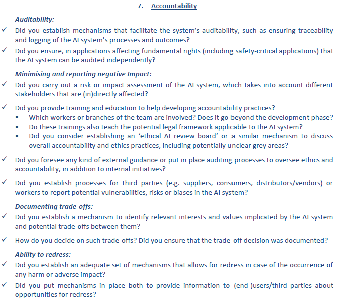

Accountability¶
Mechanisms must be put in place to ensure responsibility and accountability for AI systems and their outcomes, both before and after their deployment.
AI contributors are responsible¶
AI technologies can not be held responsible for their actions as they do not meet traditional criteria for full moral action, such as consciousness and freedom.
AI systems can not act freely, as there is human involvement in the creation, usage or monitoring of an AI system (in particular: developers, business and AI users). Consequently, these people are (legally and morally) responsible for the actions of an AI system.
Evaluation by internal and external auditors¶
Evaluation by internal (within the company) and external (specialized agency) auditors and the availability of evaluation reports contribute to trustworthiness of AI. However, information about business models and intellectual property related to AI systems do not necessarily need to be open publicly. But in applications affecting fundamental rights, including safety critical applications, AI systems should be able to be independently audited.
As a starting point for auditing AI, one could leverage ISACA’s COBIT (2019) framework. Explanation of how to apply this framework for AI projects (including for example metrics) can be found in this document.
For more information on this subject, in particular regarding security and risks, one could also have a look at the 'security' section of the technical robustness and security pillar.
Identification of negative impacts¶
Identifying, assessing, documenting and minimising potential negative impacts of an AI system is crucial for people (in)directly affected by AI systems. Impact assessments can be helpful to minimize negative impact. Assessments must be proportionate to the risks AI systems pose.
Some examples of negative impacts of AI are the following:
Built in biases, as it is built by humans it can have a conscious or unconscious bias.
Some jobs might be lost because tasks are replaced by AI.
Change in human experience, loss of personal experience/social interaction.
Acceleration of threats to cyber security.
Privacy/data breach or unlawful use of data.
Human no longer in (direct) control to overlook situations.
Social/wealth polarization.
For more information on this subject, one could also have a look at the 'risk and criticality' section of the technical robustness and security pillar.
Ensure redress is possible¶
When unjust adverse impact occurs, accessible mechanisms should be foreseen to ensure redress. National Human Rights structures (i.e. Ombudsmen and National Human Rights Institutions) can be such a source of redress, through rendering their own decisions in accordance with their respective mandates.
Knowing that redress is possible when things go wrong is key to ensure trust.
Appendix - Recommendations from the EU¶
Below are the recommendations directly reported from EU.
{kind=link}